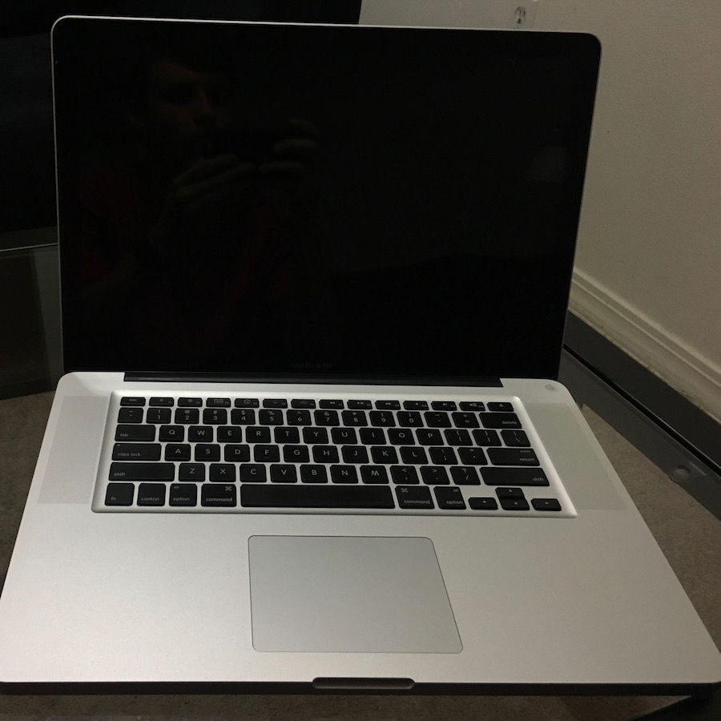
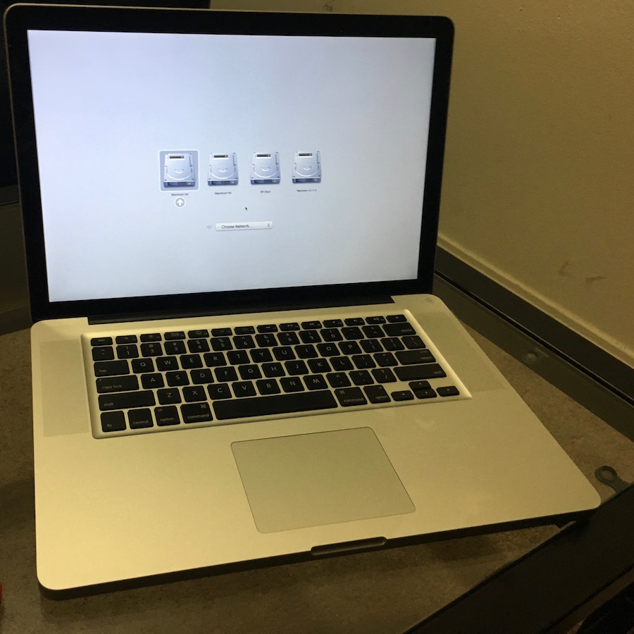

MacBookPro8,2 AMD GPU Dies...
So I'm sitting in class,
setting Windows up to run in VirtualBox off my second internal SSD. VirtualBox did not give me any issues. The next step is to reboot and make sure it is still able to boot up natively. So I shut it down and prepare to go home.
I get home and...
IT WAS WORKING 20 MINUTES AGO
Maybe the NVRAM forgot what needs to be booted. Time to give it a kick in the pants:
Holding Option, we get the usual array of what is to be expected:
Odd, my usual SSD custom icons are not showing...already suspicious. Selecting Macintosh HD yields:
AAAAAAAAAAND we're stuck again....
Reboot again with attempt at verbose mode
What in the world...
So instead of a white screen, we get a black screen...
Recovery mode?
Alright, no recovery mode either then...
Next step....uh... El Capitan installer?
FANTASTIC, a white screen again.
Welp... gonna try the installer in safe boot:
Diagnostics???
I shall give the installer one more chance in Safe Boot:
What happens if we try to boot Windows?
Nope. How about booting my SSD from USB?
Okay, NOW we are getting somewhere. The issue appears to video related. Faulty AMD GPU possibly?
Context
This MacBook Pro has two GPUs, an Intel HD 3000 and an AMD 6490M. This generation of dual-GPU MacBooks defaults to the AMD card on boot up. This means that the firmware has the 6490M already selected before any OS starts up. Now, if the 6490M is in fact busted, then I have to find a way to fall back on the Intel HD graphics for the time being. That will be tough, since I have no idea how the PCI graphics controller works on this machine. On my old MBP5,1 it was rather straightforward, since the active GPU was simply the last active GPU when the computer was shut down. Plus, I had the ability to control which GPU was selected through the gpu-power-prefs NVRAM variable. Having done some digging using the rEFIt shell on this machine, I cannot find such a variable. I guess that would make sense, considering the hardware is designed to switch GPUs on the fly with no interruption in video output. There appears to be no explicit setting for power to either GPU (and obviously the Intel GPU is always powered, it is integrated into the CPU).
Screenshots of my rEFIt shenanigans:
There is no gpu-power-prefs variable, and I really do not feel like studying the hex dump for GraphicsOutput xD
Let us see if Apple has us covered...
Awwww yeah. Time to get it ready for shipping!
Pulling the main SSD first so I can keep using my system on another Mac...
Wiped and ready for packaging!
Hoping not to screw up these instructions... XD
Meanwhile, my friend's Apple Pencil came in:
Packaged up and ready to be shipped:


Bonus backlit keyboard at night:
Copyright © wheelsandbytes 2015-2017. All Rights Reserved